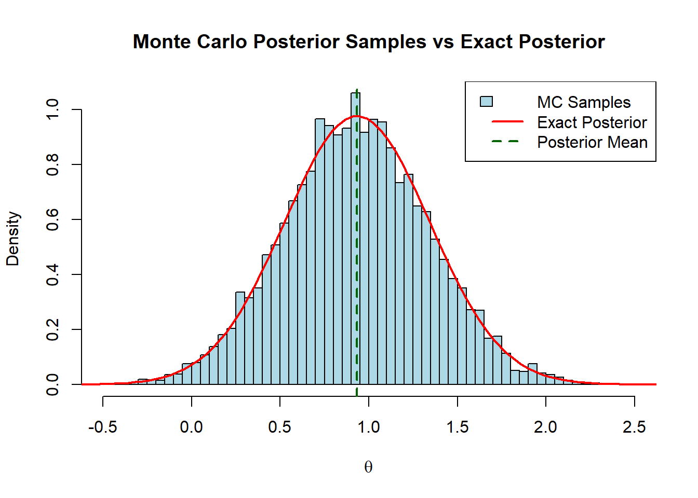
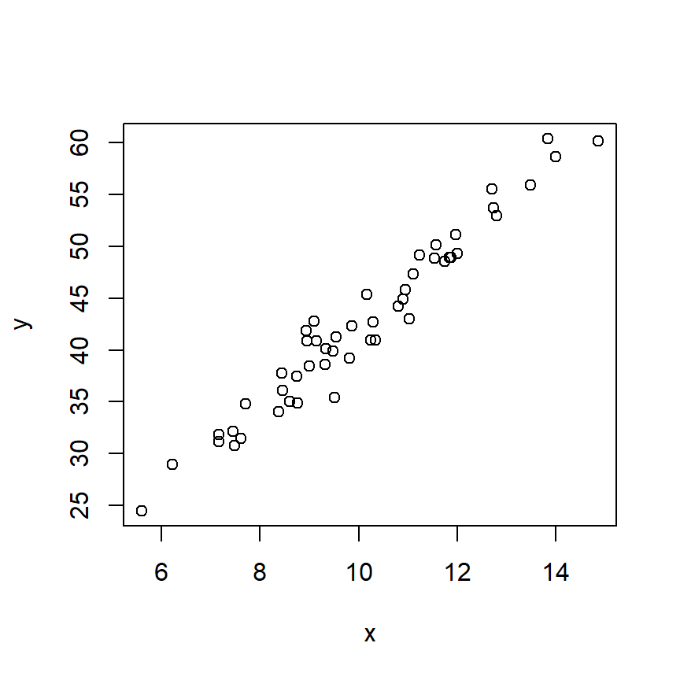
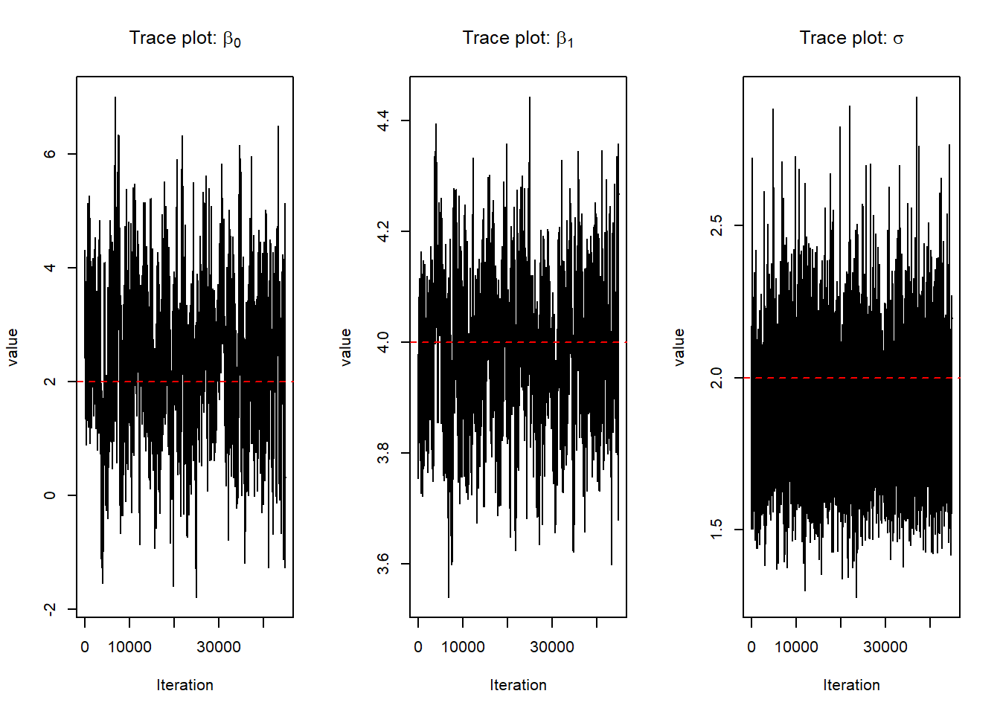
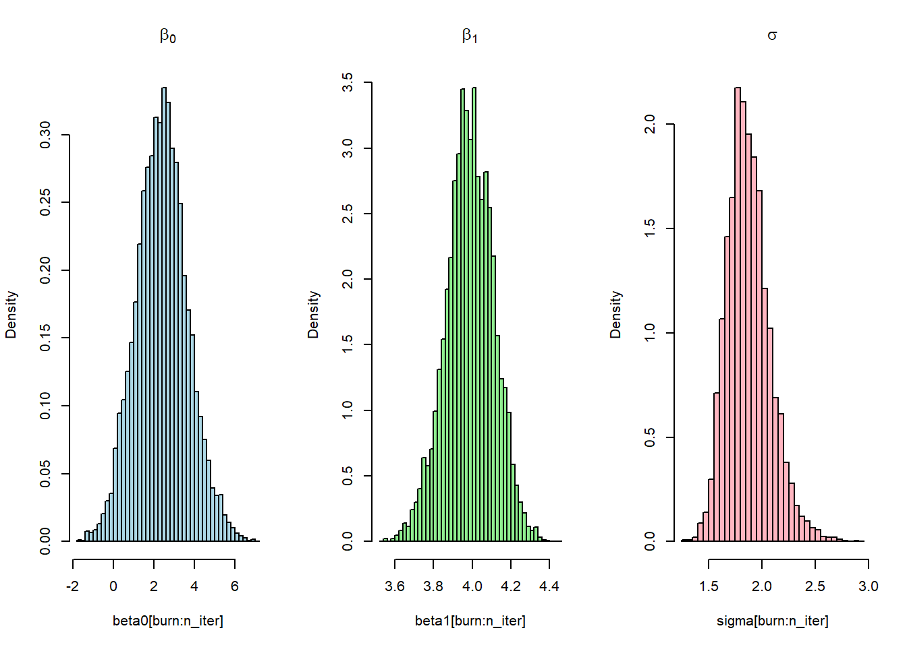
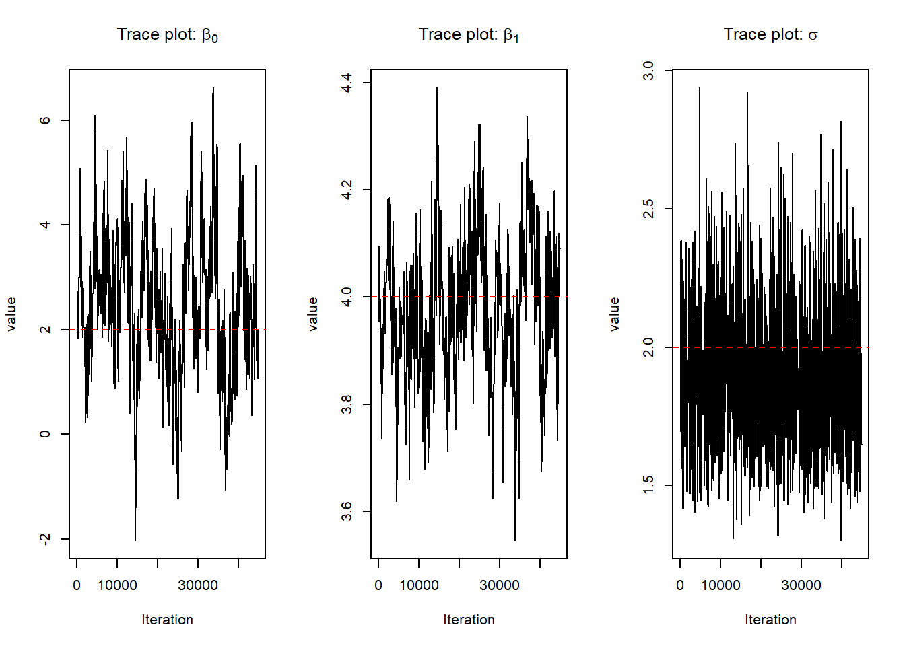
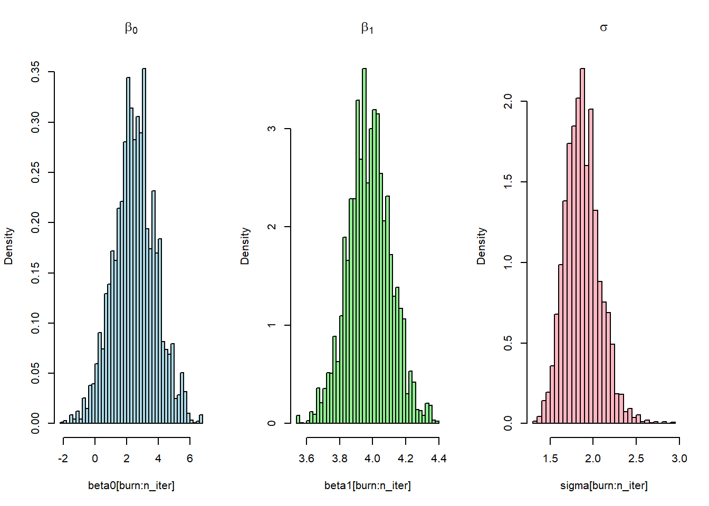
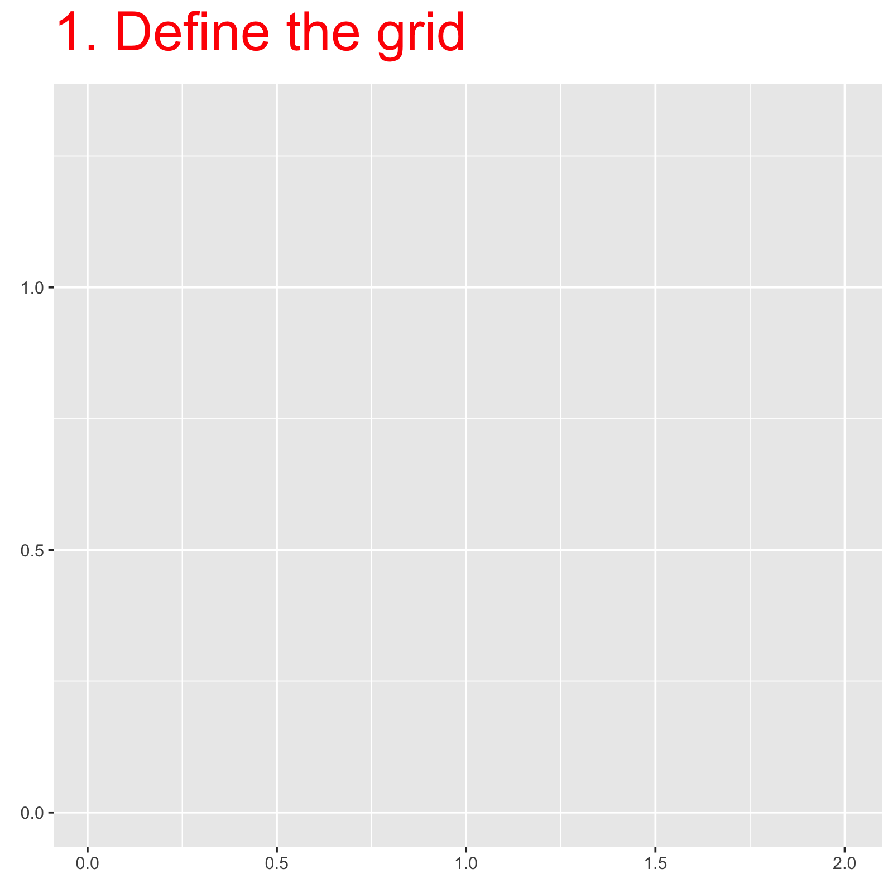

set.seed(123)
N <- 10000
# Step 1: sample from f(x)
X <- rnorm(N)
# Step 2: evaluate h(x)
hX <- X^2
# Step 3: Monte Carlo estimator
H_hat <- mean(hX)
H_hat[1] 0.997181We want to approximate an integral of the form
\[ H = \int h(x)\, f(x)\, dx, \]
where \((f(x))\) is a probability density function.
This can be written as an expectation:
\[ H = \mathbb{E}_f[h(X)], \quad X \sim f. \]
If \((X_1, \dots, X_N \sim f(x))\) are independent samples, then by the Law of Large Numbers,
\[ \hat H_N = \frac{1}{N} \sum_{i=1}^N h(X_i) \;\xrightarrow{N \to \infty}\; H. \]
This suggests a simple algorithm:
Sample \((X_1, \dots, X_N \sim f(x))\)
Compute \((h(X_i))\)
Average the results
Let
\((f(x))\) be the standard normal density \((N(0,1))\)
\((h(x) = x^2)\)
The true value is known analytically:
\[ H = \mathbb{E}[X^2] = 1. \]
\[ \mathbb{E}[X^2]= \operatorname{Var}(X) + (\mathbb{E}[X])^2. \]
If \(X \sim \mathcal{N}(0,1)\), then \(\mathbb{E}[X] = 0\) and \(\operatorname{Var}(X) = 1\). Hence,
\[ \mathbb{E}[X^2] = 1. \]
Bayesian inference is centered on the posterior distribution of a (univariate) parameter \(\theta\),
\[ p(\theta \mid y) \propto p(y \mid \theta)\, p(\theta), \]
where \(y\) denotes the observed data.
For a given function \(h(\cdot)\), the posterior mean is defined as
\[ \mathbb{E}[h(\theta) \mid y]= \int_{\Theta} h(\theta)\, p(\theta \mid y)\, d\theta. \]
When this integral cannot be evaluated analytically, Monte Carlo (MC) methods can be used for approximation.
Assume that we can simulate independent draws \(\{\theta^{(1)}, \dots, \theta^{(m)}\}\) from the posterior distribution \(p(\theta \mid y)\). Then,
\[ \widehat{\mathbb{E}}[h(\theta) \mid y]= \frac{1}{m} \sum_{i=1}^m h\bigl(\theta^{(i)}\bigr)\;\xrightarrow{m \to \infty}\;\mathbb{E}[h(\theta) \mid y). \]
The function \(h(\theta)\) represents the posterior quantity of interest. Different choices of \(h\) correspond to different posterior summaries. For example:
\(h(\theta) = \theta\) gives the posterior mean \(\mathbb{E}[\theta \mid y]\)
\(h(\theta) = \theta^2\) gives the second posterior moment
\(h(\theta) = \mathbf{1}\{\theta \in \mathcal{A}\}\) gives the posterior probability \(\mathbb{P}(\theta \in \mathcal{A} \mid y)\)
Monte Carlo methods approximate these quantities by replacing expectations with sample averages.
For example, if \(h(\theta) = \theta^2\), the posterior expectation becomes
\[ \mathbb{E}[\theta^2 \mid y]= \int \theta^2\, p(\theta \mid y)\, d\theta, \]
which can be approximated using Monte Carlo samples \(\{\theta^{(1)}, \dots, \theta^{(m)}\}\) as
\[ \frac{1}{m} \sum_{i=1}^m (\theta^{(i)})^2. \]
More generally, since the empirical distribution of the MC sample approximates \(p(\theta \mid y)\), posterior probabilities can be estimated.
For a set \(\mathcal{A} \subset \Theta\),
\[ \mathbb{P}(\theta \in \mathcal{A} \mid y)= \int_{\mathcal{A}} p(\theta \mid y)\, d\theta\approx\frac{1}{m}\sum_{i=1}^m \mathbf{1}\{\theta^{(i)} \in \mathcal{A}\}, \]
where \(\mathbf{1}\{\cdot\}\) is the indicator function.
Monte Carlo methods require the ability to simulate independent samples from the posterior distribution. This is straightforward when \(p(\theta \mid y)\) has a known form; otherwise, more advanced methods (e.g., MCMC) are required.
We illustrate Monte Carlo methods for Bayesian inference using a simple conjugate model (se we know the exact form of the posterior), and we make explicit how different choices of the function \(h(\theta)\) correspond to different posterior quantities of interest.
Consider the following simple Bayesian model:
\[ y_1, \dots, y_n \mid \theta \;\sim\; \mathcal{N}(\theta, \sigma^2),\qquad \sigma^2 \text{ known}, \]
with prior
\[ \theta \sim \mathcal{N}(\mu_0, \tau_0^2). \]
By conjugacy, the posterior distribution of \(\theta\) is also normal,
\[ \theta \mid y \sim \mathcal{N}(\mu_n, \tau_n^2), \]
where
\[ \tau_n^2= \left( \frac{n}{\sigma^2} + \frac{1}{\tau_0^2} \right)^{-1},\qquad\mu_n= \tau_n^2 \left( \frac{n \bar y}{\sigma^2}+ \frac{\mu_0}{\tau_0^2} \right). \]
For any function \(h(\theta)\), the posterior mean is
\[ \mathbb{E}[h(\theta) \mid y]= \int h(\theta)\, p(\theta \mid y)\, d\theta. \]
Even though this expectation is available in closed form for many choices of \(h\), we use Monte Carlo methods for illustration.
Monte Carlo Approximation
Draw independent samples from the posterior distribution:
m <- 10000
# observed data (toy values)
y <- c(1.2, 0.9, 1.4, 1.1, 1.0)
n <- length(y)
# known variance and prior parameters
sigma2 <- 1
mu0 <- 0
tau02 <- 1
# posterior parameters
tau_n2 <- 1 / (n / sigma2 + 1 / tau02)
mu_n <- tau_n2 * (n * mean(y) / sigma2 + mu0 / tau02)
# Monte Carlo sample from the posterior
theta_mc <- rnorm(m, mean = mu_n, sd = sqrt(tau_n2))Posterior mean of \(\theta\)
Posterior probability \(\mathbb{P}(\theta > 0 \mid y)\)
We can compare the distribution of our MC samples, the posterior mean and the exact posterior density.
# Histogram of Monte Carlo samples
hist(theta_mc, breaks = 50, probability = TRUE,
col = "lightblue", border = "black",
main = "Monte Carlo Posterior Samples vs Exact Posterior",
xlab = expression(theta),
ylab = "Density")
# Overlay exact posterior using curve()
curve(dnorm(x, mean = mu_n, sd = sqrt(tau_n2)),
from = min(theta_mc) - 0.5, to = max(theta_mc) + 0.5,
col = "red", lwd = 2, add = TRUE)
# Add posterior mean as a vertical dashed line
abline(v = mu_n, col = "darkgreen", lwd = 2, lty = 2)
# Add legend
legend("topright", legend = c("MC Samples", "Exact Posterior", "Posterior Mean"),
fill = c("lightblue", NA, NA),
border = c("black", NA, NA),
lty = c(NA, 1, 2), col = c(NA, "red", "darkgreen"), lwd = c(NA, 2, 2))
So far we have only considered the case when the likelihood depends only on a single generic parameter (in the last example \(\sigma^2\) was assumed known). What happens if we are interested in the joint distribution of two or more parameters? Lets take as an example where observations arise from a Normal(\(\mu,\sigma^2\)) density with unknown mean and variance. In this case \(\theta =\{\mu,\sigma^2\}\), lets use MC methods to simulate from the joint posterior distribution expressed as the product of a conditional and a marginal distribution:
\[ p(\mu,\sigma^2\mid \mathbf{y}) = p(\mu\mid\sigma^2,\mathbf{y})p(\sigma^2\mid \mathbf{y}) \]
A common choice is a noninformative prior:
\[ p(\mu, \sigma^2) \propto \frac{1}{\sigma^2} \]
Under this prior, the posterior distributions are known:
The conditional probability of \(\mu\mid \sigma^2,\mathbf{y} \sim N(\bar{y},\sigma^2/n)\)
The marginal of \(\sigma^2\) is computed by integrating out \(\mu\) from the joint density, i.e., \(p(\sigma^2\mid\mathbf{y})=\int_{-\infty}^\infty p(\mu,\sigma^2\mid\mathbf{y})\mathrm{d}\mu \propto \mathrm{invChi}(n-1,s^2)\)
Lets simulate some Gaussian data with some (unknown) mean and variance that we will try to estimate using MC samples:
The MC algorithm goes as follows:
Select the number of MC samples we will draw
sample the value \(\sigma^2\) from the marginal posterior distribution \(\sigma^2\mid\mathbf{y}\):
sample \(\mu\) from the conditional posterior density \(\mu\mid \sigma^2,\mathbf{y}\):
Compute the posterior mean for \(\mu\) and \(\sigma^2\) samples which should be close to the true values used in the simulation:
In practice, drawing Monte Carlo samples from the posterior distribution can be difficult for several reasons. For example, the dimension of the parameter vector \(\theta\) may be very high, or the posterior distribution may be nonstandard or have no closed-form expression, which makes direct sampling challenging.
Instead, we can generate a sample by running a Markov chain, which is a sequence of dependent random variables designed so that its long-run behavior matches the posterior distribution. After running the chain for enough steps, the resulting sample can be used just like independent Monte Carlo samples to estimate posterior quantities such as means, quantiles, or probabilities.
A Markov chain is a sequence of random variables \(\{X^{(0)}, X^{(1)}, \dots, X^{(t)}, \dots\}\), each taking values in some set called the state space \(\chi\). What makes it special is the Markov property: the conditional distribution of the next value \(X^{(t)}\) depends only on the current value \(X^{(t-1)}\) and not on all the previous values \((X^{(0)}, \dots, X^{(t-2)})\). Mathematically, we write this as
\[ p(X^{(t)} \mid X^{(0)}, X^{(1)}, \dots, X^{(t-1)}) = p(X^{(t)} \mid X^{(t-1)}), \]
where \(p(X^{(t)} \mid X^{(t-1)})\) is called the transition probability, describing how the chain moves from one state to the next.
In Markov Chain Monte Carlo (MCMC), the idea is to construct a Markov chain whose stationary distribution is exactly the distribution we want to sample from.
Stationarity means that once the chain has reached this distribution, the random variables \(X^{(t)}\) produced by the chain will have the target distribution regardless of \(t\): if \(X^{(t)} \sim \pi\), then \(X^{(t+1)} \sim \pi\) as well. In other words, the distribution “stabilizes” and does not change over time.
For a unique stationary distribution to exist, the chain must satisfy some basic properties:
Irreducibility: starting from any value \(X^{(0)}\), the chain has a positive probability of eventually reaching any region of the state space \(\chi\).
Recurrence: the chain is guaranteed to return to regions of interest infinitely often (formally, the expected number of returns to a set \(\mathcal{A} \subset \chi\) is infinite).
Aperiodicity: the chain does not get stuck in cycles; it can move through the state space without being forced into a repeating pattern.
When these conditions hold, the stationary distribution \(\pi\) is also the limiting distribution, meaning that as \(t \to \infty\), the distribution of \(X^{(t)}\) converges to \(\pi\), regardless of where the chain started.
This is the fundamental principle behind MCMC: even though each individual sample \(X^{(t)}\) depends on the previous one, after running the chain long enough we can treat the collected values as if they were drawn from the target distribution.
In Bayesian inference, the target distribution \(\pi\) is usually the posterior distribution \(p(\theta \mid y)\). Once a Markov chain has run long enough and reached its stationary (or invariant) distribution, the sequence of values \({\theta^{(1)}, \theta^{(2)}, \dots}\) can be treated as an approximate sample from the posterior. These samples can then be used in the same way as standard Monte Carlo draws to compute posterior summaries, such as means, quantiles, variances, or probabilities of events.
The Gibbs sampler is a special type of MCMC algorithm that is very useful when the posterior distribution is multivariate (i.e., when \(\theta\) is a vector) and difficult to sample from directly.
The key idea is simple: instead of trying to sample from the full joint posterior \(p(\theta_1, \theta_2, \dots, \theta_d \mid y)\) at once, we sample each component \(\theta_j\) conditionally on the current values of all the other components.
Suppose \(\theta = (\theta_1, \theta_2, \dots, \theta_d)\). Starting from an initial value \((\theta_1^{(0)}, \dots, \theta_d^{(0)})\), the Gibbs sampler generates a sequence of samples as follows:
Sample \(\theta_1^{(t+1)} \sim p(\theta_1 \mid \theta_2^{(t)}, \dots, \theta_d^{(t)}, y)\)
Sample \(\theta_2^{(t+1)} \sim p(\theta_2 \mid \theta_1^{(t+1)}, \theta_3^{(t)}, \dots, \theta_d^{(t)}, y)\)
\(\dots\)
Sample \(\theta_d^{(t+1)} \sim p(\theta_d \mid \theta_1^{(t+1)}, \dots, \theta_{d-1}^{(t+1)}, y)\)
After completing all \(d\) steps, we have one new vector \((\theta_1^{(t+1)}, \dots, \theta_d^{(t+1)})\) of the chain. Repeating this process for many iterations generates a sample from the joint posterior.
A key requirement of the Gibbs sampler is that we must know how to sample from the full conditional distributions of each parameter. In some models, these conditionals are easy to identify (as in the Normal \((\mu, \sigma^2)\) example), but in more complex models, the full conditionals may be difficult or impossible to sample from directly.
This limitation motivates the use of more general MCMC algorithms, such as Metropolis-Hastings (MH). The MH algorithm does not require that we can sample directly from the full conditionals. Instead, it allows us to propose candidate values for parameters and accept or reject them in a way that ensures the Markov chain converges to the target posterior distribution.
In other words, MH extends the Gibbs sampler to situations where full conditionals are not available in closed form, making MCMC applicable to a much wider class of Bayesian models.
The Metropolis algorithm was first proposed by Metropolis et al. (1953) and then generalized by Hastings (1970). Consider the case of a single generic parameter \(\theta\). Starting from an initial value \(\theta^{(0)}\), the \(t\)-th iteration of the MH algorithm proceeds as follows:
Propose a candidate value \(\theta^*\) from a proposal distribution \(q(\theta^* \mid \theta^{(t)})\).
This distribution can be anything convenient (e.g., Normal centered at the current value \(\theta^{(t)}\)).
The choice of \(q\) affects the efficiency of the algorithm but not the correctness of the stationary distribution.
Compute the probability ratio:
\[ r= \dfrac{p(\theta^*\mid y)}{p(\theta^{t-1}\mid y)}=\dfrac{p(y\mid \theta^*)p(\theta^*)}{p(y\mid \theta^{t-1})p(\theta^{t-1})}, \]
Accept or reject the candidate with probability \(r\)
\[ \theta^{(t)} =\begin{cases}\theta^* & \text{with probability } \min(r,1), \\\theta^{(t-1)} & \text{with probability } 1 - \min(r,1).\end{cases} \]
In practice:
Generate a uniform random number \(u \sim \text{Uniform}(0,1)\) and set \(\theta^{(t)} = \theta^*\).
If \(u < r\), accept the candidate \(\theta^*\) or reject it if \(u \geq r\) and keep the previous value \(\theta^{(t-1)}\).
Repeat steps 1–3 for many iterations to generate a Markov chain \(\{\theta^{(0)}, \theta^{(1)}, \theta^{(2)}, \dots\}\).
After sufficient iterations, the distribution of \(\theta^{(t)}\) converges to the target distribution \(\pi(\theta)\). Once the chain has converged, the samples can be used to compute posterior summaries such as means, variances, quantiles, or probabilities of events, just like in standard Monte Carlo.
Usually, a symmetric density is preferred, such that \(q(\theta^* \mid \theta^{(t)}) = q(\theta^{(t)} \mid \theta^*)\). In this case, a possible choice is the Uniform or the Gaussian distribution centered around the previous value (e.g, \(q(\theta^* \mid \theta^{(t-1)})\sim N(\theta^{(t-1)},\gamma^2)\), where \(\gamma\) is a tuning parameter chosen appropriately with respect to the algorithm efficiency).
Suppose we have data \(y_1, \dots, y_n\) from the following simple linear regression model
\[ \begin{aligned} y_i &\sim \text{Normal}(\mu_i, \sigma^2), \quad i = 1, \dots, n\\ \mu_i &= \beta_0 + \beta_1 x_i \end{aligned} \]
set.seed(123)
# Simulated data
n <- 50
# intercept
beta0_true <- 2
# slope
beta1_true <- 4
# Simulated covariate
x <- rnorm(n, 10, sqrt(5))
# Liner predictor
mu_true <- beta0_true + beta1_true*x
# random error
sigma_true <- 2
y <- rnorm(n, mean = mu_true, sd = sigma_true)
plot(x,y)
Lets explore how to implement Metropolis algorithm to sample from \(\theta= (\beta_0,\beta_1, \sigma^2)\).
Algorithm settings:
Define the log-likelihood function \(\sum_i^n \log p(y_i\mid \mu_i,\sigma^2)\):
Define the priors for \(\theta = \{\beta_0,\beta_1,\sigma\}\). The priors we will use are:
Define the posterior as the product between the likelihood and the prior (in this case the sum because we work with logarithms).
Define our Gaussian proposal function \(q(\theta^* \mid \theta^{(t-1)})\sim N(\theta^{(t-1)},\gamma^2)\), here we will use different tuning parameters \(\gamma = (0.5,0.1,0.25)\) for each element of \(\theta\)
We run the MCMC algorithm as follows:
set.seed(123)
for(t in 2:n_iter){
# Propose a new candidate for each component
theta_star <- proposalfunction(c(beta0[t-1], beta1[t-1], sigma[t-1]))
# Compute acceptance ratio (use exp because we were working on log scale)
r <- exp(posterior(theta_star) - posterior(
c(beta0[t-1],beta1[t-1], sigma[t-1])))
# Accept or reject
if(runif(1) < min(1, r)){
beta0[t] <- theta_star[1]
beta1[t] <- theta_star[2]
sigma[t] <- theta_star[3]
} else {
beta0[t] <- beta0[t-1]
beta1[t] <- beta1[t-1]
sigma[t] <- sigma[t-1]
}
}Visualize Trace Plots
par(mfrow=c(1,3))
plot(beta0[burn:n_iter], type='l', main=expression("Trace plot: " * beta[0]), ylab='value', xlab='Iteration')
abline(h=beta0_true, col='red', lty=2) # true value
plot(beta1[burn:n_iter], type='l', main=expression("Trace plot: " * beta[1]), ylab='value', xlab='Iteration')
abline(h=beta1_true, col='red', lty=2) # true value
plot(sigma[burn:n_iter], type='l',main=expression("Trace plot: " * sigma), ylab='value', xlab='Iteration')
abline(h=sigma_true, col='red', lty=2) # true value
Visualize Density Plots
par(mfrow=c(1,3))
hist(beta0[burn:n_iter], breaks=50, probability=TRUE, col='lightblue', main=expression(beta[0]))
hist(beta1[burn:n_iter], breaks=50, probability=TRUE, col='lightgreen', main=expression(beta[1]))
hist(sigma[burn:n_iter], breaks=50, probability=TRUE, col='lightpink', main=expression(sigma))
A central component of the Metropolis algorithm is the proposal distribution, which generates candidate parameter values. For each proposed value, we compute the acceptance ratio \(r\) and then randomly decide whether to accept or reject it. In this example, we use a normal proposal distribution with standard deviations \(\gamma =(0.5, 0.1, 0.25)\) for the three parameters. The Metropolis-Hastings algorithm generalizes this approach by allowing the proposal distribution to be asymmetric. The acceptance ratio compares the posterior densities at the candidate and current parameter values:
\[ r = \dfrac{p(\theta^*\mid y)}{p(\theta^{t-1}\mid y)} = \dfrac{p(y\mid \theta^*)p(\theta^*)}{p(y\mid \theta^{t-1})p(\theta^{t-1})} \]
For symmetric proposals, we accept the candidate \(\theta^*\) with probability \(\min(1, r)\). However, for asymmetric proposals \(q(\theta^* \mid \theta^{t-1})\), we must adjust this ratio to:
\[ r = \dfrac{p(y\mid \theta^*)p(\theta^*)}{p(y\mid \theta^{t-1})p(\theta^{t-1})} \cdot \dfrac{q(\theta^{t-1} \mid \theta^*)}{q(\theta^* \mid \theta^{t-1})} \]
To illustrate the generalization to Metropolis-Hastings, we can make the proposal asymmetric for some parameters. For example, we can use an exponential proposal for \(\sigma\) to ensure it remains positive.
We propose \(\sigma^* \sim \text{Exp}(1/\sigma^{(t-1)})\), which centers the proposal around the current value but with positive-only support:
This asymmetric proposal requires modifying the acceptance ratio to account for the differing proposal densities in forward and reverse directions:
\[ r = \dfrac{p(y\mid \beta_0^*, \beta_1^*, \sigma^*)p(\beta_0^*, \beta_1^*, \sigma^*)}{p(y\mid \beta_0^{t-1}, \beta_1^{t-1}, \sigma^{t-1})p(\beta_0^{t-1}, \beta_1^{t-1}, \sigma^{t-1})}\times \dfrac{q(\beta_0^{t-1}, \beta_1^{t-1}, \sigma^{t-1} \mid \beta_0^*, \beta_1^*, \sigma^*)}{q(\beta_0^*, \beta_1^*, \sigma^* \mid \beta_0^{t-1}, \beta_1^{t-1}, \sigma^{t-1})} \]
where the proposal density ratio factorizes into its components:
\[ \dfrac{q(\cdot\mid\cdot)}{q(\cdot\mid\cdot)} =\dfrac{\phi(\beta_0^{t-1} \mid \beta_0^*, 0.5) \cdot \phi(\beta_1^{t-1} \mid \beta_1^*, 0.1) \cdot \text{Exp}(\sigma^{t-1} \mid 1/\sigma^*)}{\phi(\beta_0^* \mid \beta_0^{t-1}, 0.5) \cdot \phi(\beta_1^* \mid \beta_1^{t-1}, 0.1) \cdot \text{Exp}(\sigma^* \mid 1/\sigma^{t-1})} \]
Here \(\phi(\cdot)\) denotes the Gaussian density. The Gaussian proposals for \(\beta_0\) and \(\beta_1\) remain symmetric and cancel in the ratio, while the exponential proposal for \(\sigma\) requires explicit evaluation of both forward and reverse proposal densities:
proposal_density <- function(theta_proposed, theta_current) {
# For beta0 and beta1: Gaussian proposals
dens_beta0 <- dnorm(theta_proposed[1], mean = theta_current[1], sd = 0.5, log = TRUE)
dens_beta1 <- dnorm(theta_proposed[2], mean = theta_current[2], sd = 0.1, log = TRUE)
# For sigma: Exponential proposal (asymmetric)
dens_sigma <- dexp(theta_proposed[3], rate = 1/theta_current[3], log = TRUE)
return(dens_beta0 + dens_beta1 + dens_sigma)
}set.seed(123)
# Set empty vector to store samples for the parameters
beta0 <- rep(NA, n_iter)
beta1 <- rep(NA, n_iter)
sigma <- rep(NA, n_iter)
# Set starting values
beta0[1] <- 1
beta1[1] <- 2
sigma[1] <- 1
for(t in 2:n_iter){
# Store current theta
theta_current <- c(beta0[t-1], beta1[t-1], sigma[t-1])
# Propose a new candidate
theta_star <- proposalfunction_2(theta_current)
# Compute acceptance ratio with proposal density correction
log_r <- (posterior(theta_star) - posterior(theta_current)) +
(proposal_density(theta_current, theta_star) -
proposal_density(theta_star, theta_current))
# Accept or reject
if(log(runif(1)) < min(0, log_r)){
beta0[t] <- theta_star[1]
beta1[t] <- theta_star[2]
sigma[t] <- theta_star[3]
} else {
beta0[t] <- beta0[t-1]
beta1[t] <- beta1[t-1]
sigma[t] <- sigma[t-1]
}
}Visualize Trace Plots
par(mfrow=c(1,3))
plot(beta0[burn:n_iter], type='l', main=expression("Trace plot: " * beta[0]), ylab='value', xlab='Iteration')
abline(h=beta0_true, col='red', lty=2) # true value
plot(beta1[burn:n_iter], type='l', main=expression("Trace plot: " * beta[1]), ylab='value', xlab='Iteration')
abline(h=beta1_true, col='red', lty=2) # true value
plot(sigma[burn:n_iter], type='l',main=expression("Trace plot: " * sigma), ylab='value', xlab='Iteration')
abline(h=sigma_true, col='red', lty=2) # true value
Visualize Density Plots
par(mfrow=c(1,3))
hist(beta0[burn:n_iter], breaks=50, probability=TRUE, col='lightblue', main=expression(beta[0]))
hist(beta1[burn:n_iter], breaks=50, probability=TRUE, col='lightgreen', main=expression(beta[1]))
hist(sigma[burn:n_iter], breaks=50, probability=TRUE, col='lightpink', main=expression(sigma))
The Integrated Nested Laplace Approximation (INLA) is a fast and accurate Bayesian approximation method for the albeit wide class of Latent Gaussian Models (LGMs). This includes GLMs, GLMMs,GAM-like models and a wide range of spatial and spatiotemporal models.
Models of this type can be written a
\[ \begin{aligned} \mathbf{y} \mid \mathbf{u}, \theta &\sim \prod_i \pi(y_i \mid \eta_i, \theta), \\[6pt] \boldsymbol{\eta} &= A_1 \mathbf{u}_1 + A_2 \mathbf{u}_2 + \dots + A_k \mathbf{u}_k, \\[6pt] \mathbf{u} \mid \theta &\sim \mathcal{N}\big(\mathbf{0}, \mathbf{Q}^{-1}(\theta)\big), \\[6pt] \theta &\sim \pi(\theta). \end{aligned} \]
The first step in defining a LGM within the Bayesian framework is to identify a distribution for the observed data \(\mathbf{y} = (y_1, \dots, y_n)\) where typically the mean \(\mathbb{E}(y_i) = \mu_i\) of each observation \(y_i\) is linked to a linear predictor \(\eta_i\) through an appropriate link function \(g(\cdot)\). The additive linear predictor \(\eta_i\) can be defined by covariates (i.e., fixed effects) and different types of random effects:
\[ \eta_i = \alpha + \sum_{j=1}^{P} \beta_j x_{ij} + \sum_{k=1}^{L} f_{k}(z_{ik}) \qquad i = 1, \dots, n. \]
Here, \(\alpha\) is the intercept, \(\beta_j\), \(j = 1, \dots, P\), are coefficients of \(P\) covariates, and the functions \(f_{k}(\cot)\) can take different forms such as smooth and nonlinear effects of covariates, time trends and seasonal effects, random intercept and slopes as well as temporal or spatial random effects. We denote the vector of all latent effects as \(\mathbf{u}\) and its is assumed to be Gaussian Markov random field (GMRF). This GMRF will have a zero mean and precision matrix \(\mathbf{Q}(\theta)\) which consists of sums of the precision matrices of the fixed effects and the other model components. Furthermore, \(\theta\) represents a vector of hypeparameters that control the behavior of the latent components and the likelihood of observations (\(p~(\mathbf{y} \mid \mathbf{u},~ \theta)\)), which we assume are conditionally independent given the latent field \(\mathbf{u}\).
The core idea behind the INLA approach is that, rather than estimating the joint posterior distribution of the model parameters \(p(\mathbf{u},\theta|\mathbf{y})\), we focus on individual posterior marginals of the model parameters (\(p(u_i|\mathbf{y}\) and \(p(\theta_j \mid \mathbf{y}\))). This is achieved thanks to the computational properties of GMRF and the Laplace approximation for multidimensional integration.
A random variable \(\mathbf{u}\) is said to be a Gaussian Markov random field (GMRF) with respect to a graph \(G\), with vertices \(\{1,2,\dots,n\}\) and edges \(E\), mean vector \(\boldsymbol{\mu}\), and precision matrix \(\mathbf{Q}\), if its probability distribution is
\[ \pi(\mathbf{u}) = |\mathbf{Q}|^{1/2}(2\pi)^{-n/2} \exp\left\{ -\frac{1}{2} (\mathbf{u}-\boldsymbol{\mu})^{\top} \mathbf{Q} (\mathbf{u}-\boldsymbol{\mu}) \right\}, \]
and the precision matrix satisfies the Markov property
\[ Q_{ij} \neq 0 \;\Longleftrightarrow\; \{i,j\} \in E. \]
That is, conditional independence between \(u_i\) and \(u_j\) corresponds to zeros in the precision matrix.
We are interested in estimating the posterior marginals \(p(u_i|\mathbf{y})\). We could compute this by integrating out all the other components in the model i.e., \(p(u_i \mid \mathbf{y}) = \int p(\mathbf{u}\mid \theta) d \mathbf{u}_{-i}\). However, this might not be computationally efficient as the latent filed \(\mathbf{u}\) can be very high dimensional. Instead we can compute the posterior marginals by considering that
\[ p(u_i \mid \mathbf{y}) = \int \color{skyblue}{ p(u_i\mid \theta,\mathbf{y})} ~\color{purple}{p(\theta\mid \mathbf{y})} d \theta \]
This possible because the size of \(\theta\) is typically small and thus, easier to integrate (this is not a too restrictive assumption since most likelihoods and latent effects will typically depend on a small number of hyperparemeters). This means that, in order to compute the marginal posteriors \(p(u_i \mid \mathbf{y})\), we need to approximate:
To build an approximation to \(p(\theta \mid \mathbf{y})\) we can use definition of conditional probability where, conditional on the observations \(\mathbf{y}\)
\[ \begin{aligned} p(\mathbf{u}~,\theta\mid \mathbf{y}) &= p(\mathbf{u}\mid\mathbf{y},\theta)~p(\theta\mid \mathbf{y}) \\ \Rightarrow p(\theta \mid \mathbf{y}) &= \dfrac{\color{tomato}{p(\mathbf{u}~,\theta \mid \mathbf{y})}}{p(\mathbf{u} \mid \mathbf{y},\theta)} \end{aligned} \]
Applying Bayes rules we get that \(\color{tomato}{p(\mathbf{u}~,\theta \mid \mathbf{y})} = \frac{p(y \mid \mathbf{u}, \theta)\,p(\mathbf{u}, \theta)} {p(y)}\)
\[ \begin{aligned} p(\mathbf{u}~,\theta\mid \mathbf{y}) &= \color{tomato}{\frac{p(y \mid \mathbf{u}, \theta)\, p(\mathbf{u}, \theta)} {p(y)}} \frac{1}{p(\mathbf{u} \mid \theta, \mathbf{y})} ~~\color{grey}{\text{Factorization of the joint prior} ~~p(\mathbf{u},\theta)=p(\mathbf{u}\mid \theta)p(\theta)}\\ &= \frac{p(y \mid \mathbf{u}, \theta)\, p(\mathbf{u} \mid \theta)\, p(\theta)} {p(y)} \frac{1}{p(\mathbf{u} \mid \theta, \mathbf{y})} \\ &\propto \dfrac{p(\mathbf{y}\mid \mathbf{u},\theta)p(\mathbf{u}\mid \theta)p(\theta)}{p(\mathbf{u}\mid \theta, \mathbf{y})} \end{aligned} \]
Where
In practice we approximate \(p(\mathbf{u}\mid \theta, \mathbf{y})\) with a Gaussian distribution \(p_G(\mathbf{u}\mid \theta, \mathbf{y})\). How? we use the Laplace method.
The Laplace approximation is an old technique for the approximation of integrals. Suppose the following integral that we want to approximate as \(n \to \infty\):
\[ I_n = \int_x \exp(n f(x))\,dx, \]
We represent \(f(x)\) by means of a Taylor series expansion evaluated at a point \(x_0\)in which \(f(x)\) has its maximum so that
\[ \begin{aligned} f(x) &\approx f(x_0) + \cancelto{0}{f'(x_0)(x-x_0)} + \frac{1}{2}f''(x_0)(x-x_0)^2 \\ \Rightarrow I_n &\approx \exp\left\{n f(x_0)\right\} \underbrace{\int_x\exp\left\{\frac{n}{2} (x-x_0)^2f''(x_0) \right\}dx}_{\text{Gaussian Kernell}}\\ \therefore \tilde{I}_n &= \exp(n f(x_0)) \sqrt{\frac{2\pi}{-n f''(x_0)}} \end{aligned} \]
Considering \(nf(x)\) as the sum of log-likelihoods and \(x\) as the unknown parameter, then we can apply Laplace method to approximate it by evaluating the Taylor series expansion at \(x_0\).
The full conditional we want to approximate is given by
\[ \begin{aligned} p(\mathbf{u}\mid \theta, \mathbf{y}) &\propto \pi(\mathbf{u} \mid \theta)\,\pi(\mathbf{y} \mid \mathbf{u}, \theta) \\ &\propto \exp\!\left( -\frac{1}{2}\mathbf{u}^\top \mathbf{Q} \mathbf{u} + \sum_i \log \pi(y_i \mid \eta_i, \theta) \right). \end{aligned} \]
We can take the second-order Taylor series expansion for the log density \(\log p(y_i\mid \eta_i,\theta)\).
Recall that by letting \(c=-f''(x_0);b=cx_0\) the second-order Taylor series expansion for \(f(x)\) evaluated at its maximum \(x_0\) is:
\[ \begin{aligned} f(x)&\approx f(x_0) +\tfrac12f''(x_0)(x-x_0)^2 \\ &\approx f(x_0)+\tfrac12f''(x_0) (x^2 -2x_0x +x_0^2) \\ &\approx\underbrace{\bigl[f(x_0)+\tfrac12f''(x_0)x_0^2\bigr]}_{\text{constant } a}+ \underbrace{\bigl[-f''(x_0)x_0\bigr]}_{b}x+\tfrac12\underbrace{f''(x_0)}_{-c}x^2 \qquad\color{grey}{\text{setting } c=-f''(x_0),\;b=cx_0}\\ &\approx a+bx-\tfrac12cx^2. \end{aligned} \]
Thus the second order Taylor expansion for the log density yields to
\[ \begin{aligned} p(\mathbf{u}\mid \theta, \mathbf{y}) &\propto \exp\!\left\{ -\frac{1}{2}\mathbf{u}^\top \mathbf{Q} \mathbf{u} + \sum_i ( a_i + b_i \eta_i - \frac{1}{2}c_i \eta_i^2) \right\}.\\ &\approx \exp\left\{ \frac{1}{2}\mathbf{u}^\intercal \tilde{Q}\mathbf{u} + \tilde{\mathbf{u}}\right\} \end{aligned} \]
In short, we approximate \(p(\mathbf{u}\theta,\mathbf{y})\) with a Gaussian \(N(\tilde{Q}\tilde{\mathbf{b}},\tilde{Q})\) with \(\tilde{Q}= Q + \begin{bmatrix}\text{diag}(\mathbf{c}) &0\\0&0 \end{bmatrix}\) and \(\tilde{\mathbf{b}} = [\mathbf{b}~ 0]^\intercal\)
\(\mathbf{b}\): Contains the first derivatives of the log-likelihood w.r.t. each \(\eta_i\), evaluated at the expansion point (i.e. the mode).
\(\mathbf{c}\): Contains the negative second derivatives (observed Fisher information) of the log-likelihood w.r.t. each \(\eta_i\).
Thus, the approximation of the joint posterior of the hyperparameters is given by:
\[ \begin{aligned} p(\theta\mid \mathbf{y}) &\propto \dfrac{p(\mathbf{y}\mid \mathbf{u},\theta)p(\mathbf{u}\mid \theta)p(\theta)}{p(\mathbf{u}\mid \theta, \mathbf{y})} \\ &\approx \left. \frac{ p(\mathbf{y} \mid \mathbf{u},\theta)\, p(\mathbf{u} \mid \theta)\, p(\theta) }{ p_G(\mathbf{u} \mid \mathbf{y},\theta) } \right|_{u=u^*(\theta)}. \end{aligned} \]
where \(p_G(\mathbf{u} \mid \mathbf{y},\theta))\) is the Gaussian approximation – based the Laplace method - of \(p(\mathbf{u}\mid \theta, \mathbf{y})\) and \(u^*(\theta)\) is the mode for a given \(\theta\). This Gaussian approximation will be exact as \(n \to \infty\).
Different optimization techniques like Newton-type methods can be used to find the mode \(\tilde{p}(\theta\mid \mathbf{y})\) and then exploring \(\tilde{p}(\theta\mid \mathbf{y})\) to find grid point for numerical integration. Figure 1 illustrates the numerical integration approach to compute \(p(\theta\mid \mathbf{y})\) for a regular grid series of points \(\theta_k, k = 1,\ldots,K\)

Now we just need to approximate \(p(u_i\mid \theta\mathbf{y})\), but unfortunately we cannot use the marginals from the preivous Gaussian approximation \(p_G(\mathbf{u} \mid \mathbf{y},\theta)\) directly as there can be errors in the location and/or errors due to the lack of skewness.
There are two ways of approximating the marginals for the latent fields. The first one is by simply using the Gaussian approximation and computing the posterior conditional distributions \(p(u_i\mid \theta,\mathbf{y})\) directly as marginals of \(p_G(\mathbf{u} \mid \mathbf{y},\theta)\) i.e.,
\[ \tilde{p}(u_i\mid \theta,\mathbf{y})=N(u_i;\mu_i(\theta),\sigma_i^2(\theta)) \]
with mean \(\mu_i(\theta)\) and variance \(\sigma^2_i(\theta)\). However, while computationally cost effective, this approximation is generally not very good specially for non-Gaussian likelihoods due to errors in the location and /or lack of skewness.
Thus, a different approach is to write the vector of hyperparameters \(\mathbf{u} = \{u_i,\mathbf{u}_{-i}\}\) and use the Laplace approximation again for:
\[ \begin{aligned} p(u_i \mid \boldsymbol{\psi}, \mathbf{y}) &= \frac{p(\{u_i,\mathbf{u}_{-i}\} \mid \theta, \mathbf{y})}{p(\mathbf{u}_{-i}\mid u_i, \theta, \mathbf{y})} \\ &= \frac{p(\mathbf{u}, \theta \mid \mathbf{y})}{p(\theta \mid \mathbf{y})} \cdot \frac{1}{p(\mathbf{u}_{-i} \mid u_i, \theta, \mathbf{y})}\\ &\propto \frac{p(\mathbf{u}, \theta \mid \mathbf{y})}{p(\mathbf{u}_{-i} \mid u_i, \theta, \mathbf{y})} \\ &\left.\approx \frac{p(\mathbf{u}, \theta \mid \mathbf{y})}{\widetilde{p}(\mathbf{u}_{-i} \mid u_i, \theta, \mathbf{y})} \right|_{\mathbf{u}_{-i}=\mathbf{u}^*_{-i}(u_i,\theta)}=:\tilde{p}(u_i\mid\theta,\mathbf{y}). \end{aligned} \]
where \(\widetilde{p}(\mathbf{u}_{-i} \mid u_i, \theta, \mathbf{y})\) is the Laplace Gaussian approximation to \(p(\mathbf{u}_{-i} \mid u_i, \theta, \mathbf{y})\) and \(\mathbf{u}_{-i}^*(u_i, \theta)\) is its mode.
This nested extra Laplace approximation step (an hence the Integrated Nested Laplace Approximation name) is sufficiently accurate but computationally more expensive that the simpler Gaussian strategy. Thus, Variational Bayes techniques have been used to improve the mean of the GMRF approximation instead (see (vanniekerk2021?)). This correction is computationally efficient and achieves accuracy for the mean similar to a full integrated nested Laplace approximation.
From this improved GMRF approximation we can then compute the marginals \(p_G^*(u_i \mid \mathbf{y},\theta)\) to obtain:
\[ \tilde{p}(u_i\mid\mathbf{y}) = \sum_k p_G^*(u_i \mid \mathbf{y},\theta) \tilde{p}(\theta\mid\mathbf{y})w_k \]